As my writing schedule has become more demanding, I’ve had less time to spend writing blog posts for Peace Garden Passage; so many of my posts now are repeats of the work I’m doing for pay. But having the chance to attend the 2024 National Eucharistic Congress has called me back, for myself if nothing else. The week was so jam-packed full of inspiration and I know that if I don’t record it somewhere, the event’s impact will slowly slip away. So, I’m going to take time to do a retrospective journal over the next days, beginning with Day 1 of our journey.
I traveled with the Diocese of Fargo, preferring not just to show up at a conference but to embark on an actual pilgrimage with others; to experience the whole journey by land, even knowing it likely would mean a sore back and swollen feet by journey’s end. Those challenges did transpire, but the sufferings were so little compared to the immense treasures.
For this first entry, though, I need to go back a couple days. This was supposed to be an adventure my husband and I would take together, and I was so excited as the day for departure drew near, but my husband was having the opposite reaction. He’d barely gotten over a very long and trying summer illness, and some new demands had cropped up that had him wondering about the timing.
The Thursday before departure, I met with my Via Maria group that studies spiritual works together. That evening, only two of us showed up, so it was an intimate meeting that ended as it always does with prayer swapping. “Could you pray that my husband is able to go on this pilgrimage?” I asked Joanne. She agreed to do that. But on the way out later that night, as we were heading out the door, she said, “Roxane, if for some reason it doesn’t work out, keep me in mind as a substitute.” We only had a few days before departure, so this seemed like a bit of a longshot, and besides, I still had Plan A firmly implanted. “Is that even possible?” I said, knowing she works full time. “I think it is,” she replied. “Hmmm, okay. I will keep that in mind.”
That moment would come back to me again and again on our trip, because as we moved toward and through the weekend, some events transpired that made it seemed pretty clear Troy wasn’t going be the one accompanying me on that trip. Joanne’s words returned, “If it doesn’t work out…” I couldn’t believe it had come to this, but on Sunday morning, I texted her. “Were you serious about going to Indianapolis with me?” And by Sunday night, everything was arranged, and she returned with her “Yes.”
Sunday afternoon was pivotal, though. I was uneasy about the possible change in plans, because they were not my original plans, and I don’t easily switches courses. So, I went to the place where peace is often found: the Adoration chapel. There, I rested for an hour before the Lord. I wanted him to make his plan clear regarding the trip. Lingering there, I began to sense my husband’s heart. A growing awareness of his obvious lack of peace helped me find mine. “Okay, God, not my will but yours; whatever you choose.”
A short while later, I was briefing Joanne on what the trip would entail by phone. I’d been packing for days, and she would have a full day of work on Monday, and only then would be freed to seriously begin preparing for a week’s absence. Nevertheless, we were both on the bus by 7 a.m. the next morning, giggling at her nametag, which said “Troy” on it. We had to explain many times her surprise presence.
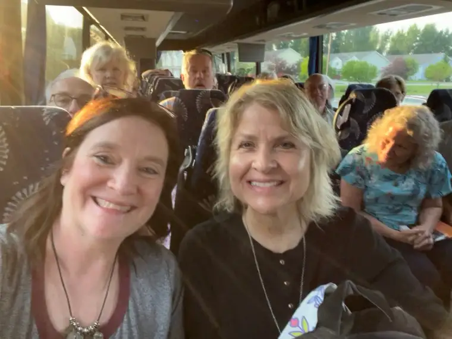
Having sensed now that God’s alternative route was in place (it really was incredible that I would not be sitting alone on the bus), I felt confident that no matter what might happen on this trip, God had us in the palm of his hands. When Steve, one of group guides, offered a morning prayer, and noted that, “Since this is a pilgrimage, expect a few rough patches,” I knew he was right. But I’d already gotten through one major “mishap,” and the Plan B was seeming a blessed switch already, so I was ready for the adventure God had in mind, come what may. I gazed out the window and enjoyed the beautiful countryside.
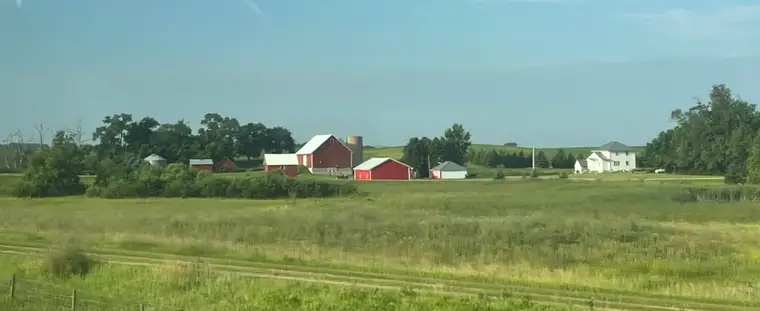
Steve had also made us aware that we were on a very tight time constraint, so we knew we wouldn’t have a lot of breaks. We would be stopping at Mundelein Seminary in Illinois for the evening; a beautiful campus featuring a man-made lake, and many other gorgeous features. About 10 minutes into our drive, however, we were pulled over. The other bus traveling with us had experienced a breakdown, and we were stalled with them, waiting out the resolve. Once we were finally on our way again, we agreed to skip one of the planned bathroom breaks to make it to Mundelein in time. Our buses both pulled in about 45 minutes before the seminary cafeteria closed down for the night.
After dinner, we found our way to our rooms, and began perusing the beautiful grounds before Mass. The sky was a beautiful hue, and we relished taking photos and exploring the gorgeous campus.
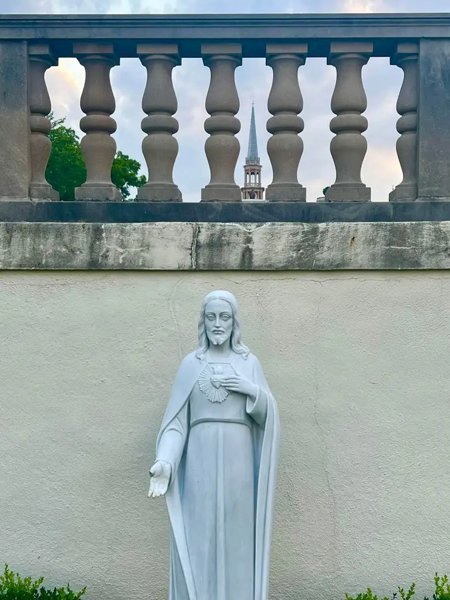
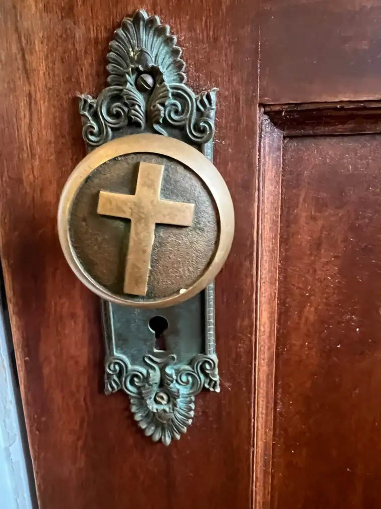
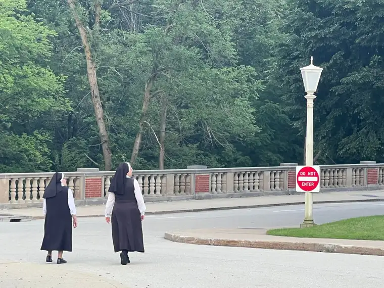
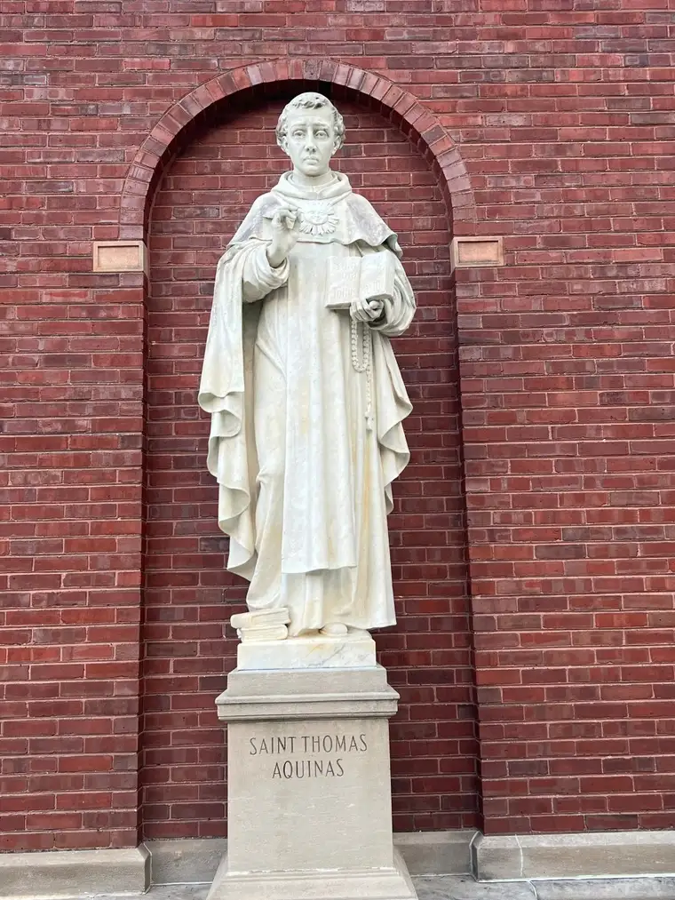
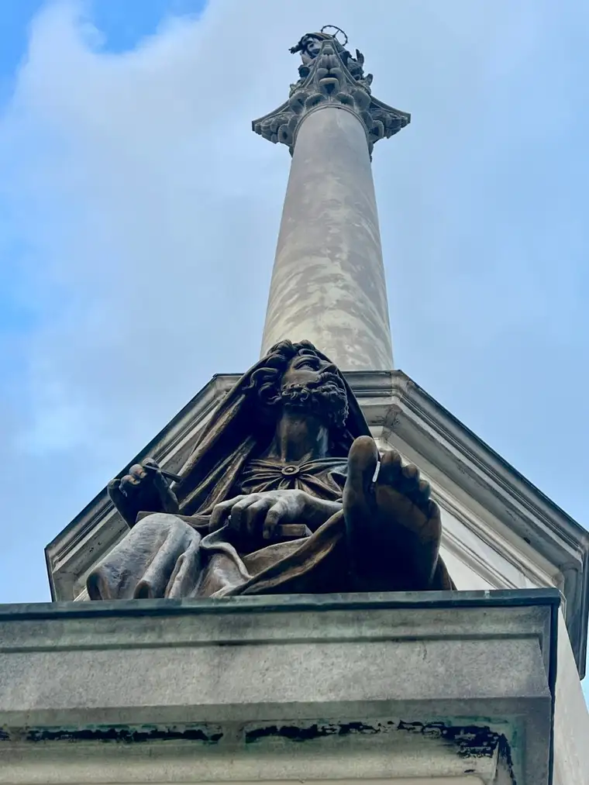
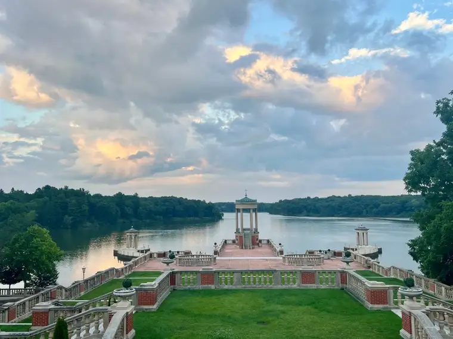
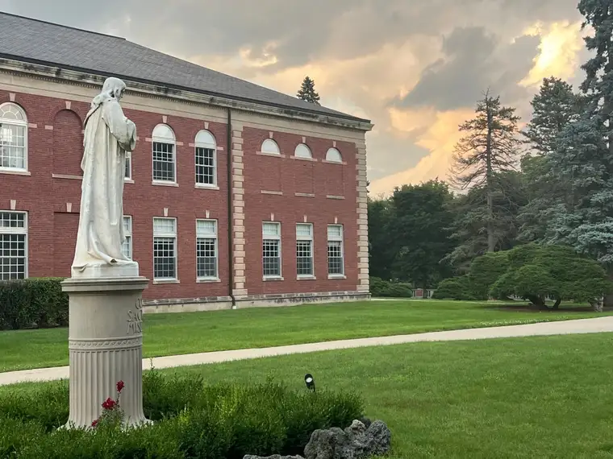
Mass was celebrated not in the magnificent main chapel, but a simpler one upstairs from our “cells.”
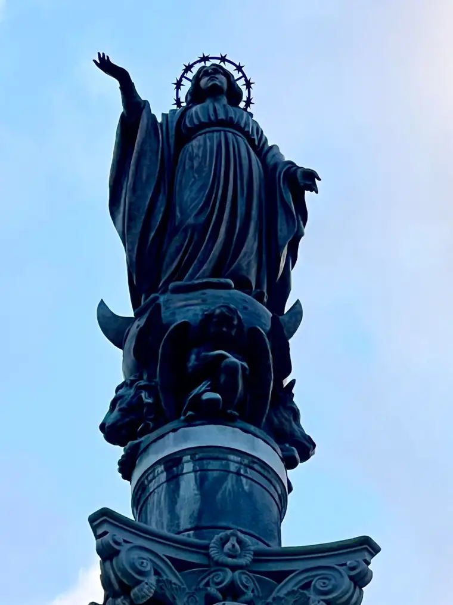
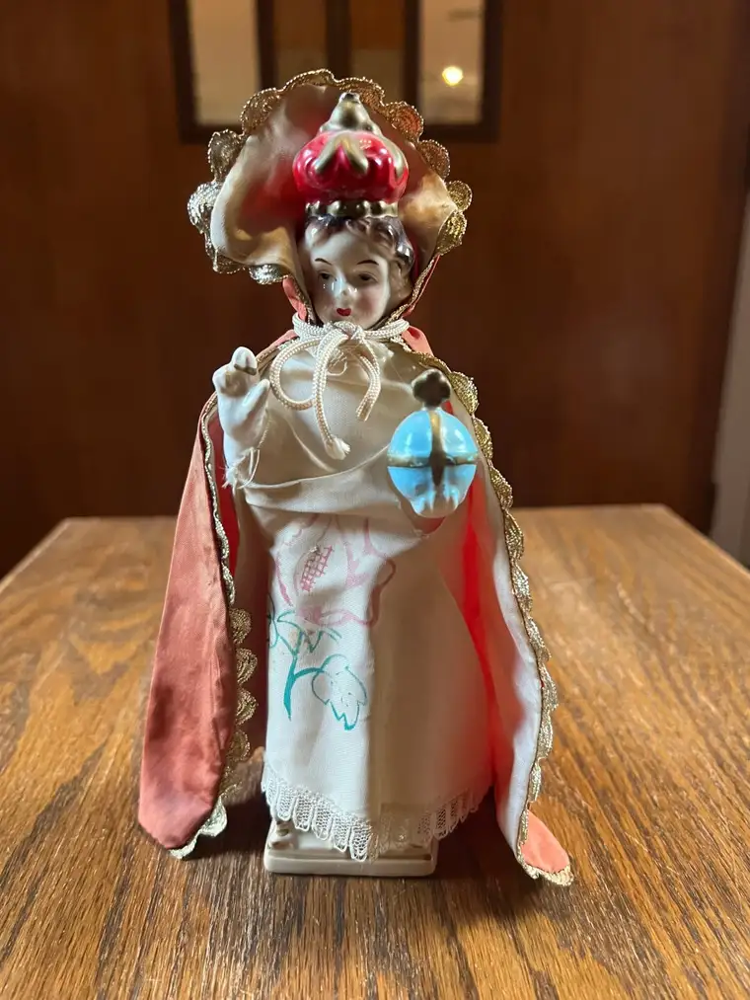
During the homily, we learned some history of the seminary, and how the 1926 National Eucharistic Congress had convened there, at Mundelein, 50 or so miles from Chicago.
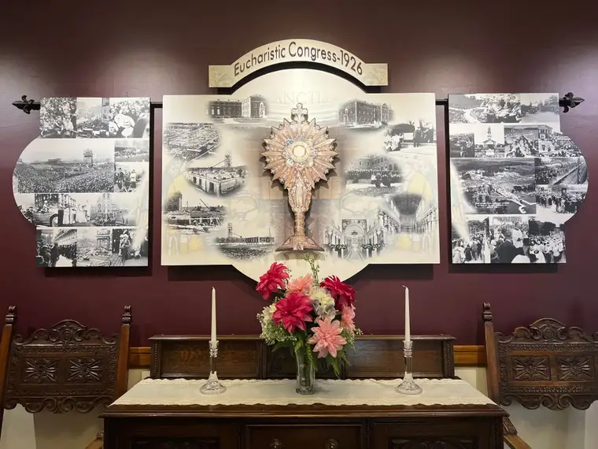
Fr. Jasinski explained that the seminary was designed in both the classical and colonial styles, reflective of the times.
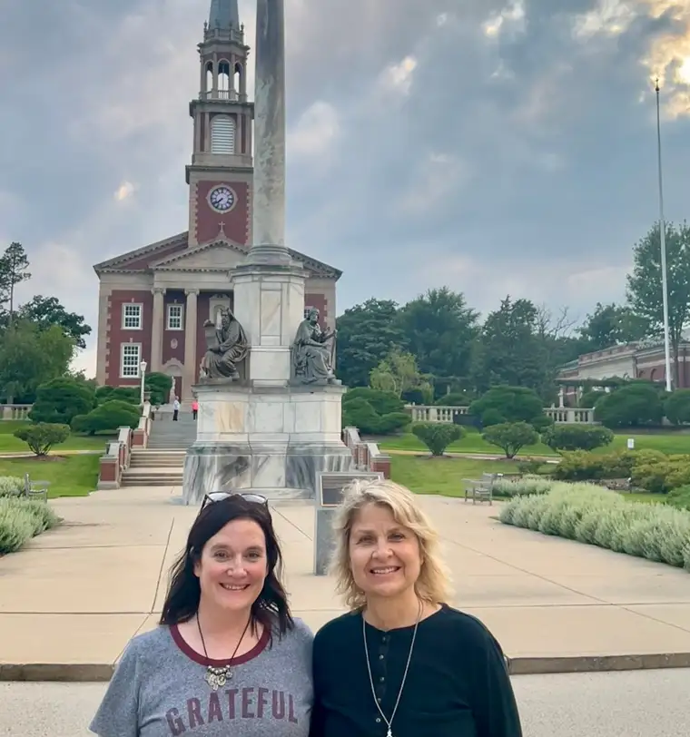
After Mass, Joanne and I, and some of the others, found our way back to the grounds, knowing our time there would be very short. Making our way down the steps to the lake in the dark, a spotlight turned on us, the police about a mile away and below us asking, through an amplification device, “Is this your car?” It took us a few steps to realize the spotlight we were the target of the police investigation! A short while later, they were apprehending some fishermen who had sneaked into the off-limits area. It was at that moment, I think, that Joanne and I knew we were going to be in a for crazy adventure. After all, it was still Day 1, and we’d already found ourselves in trouble!
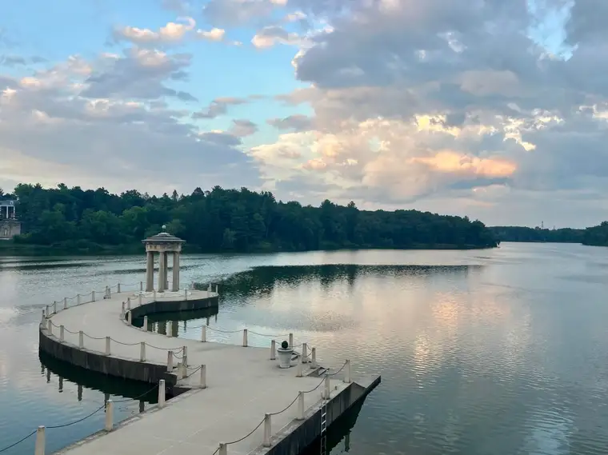
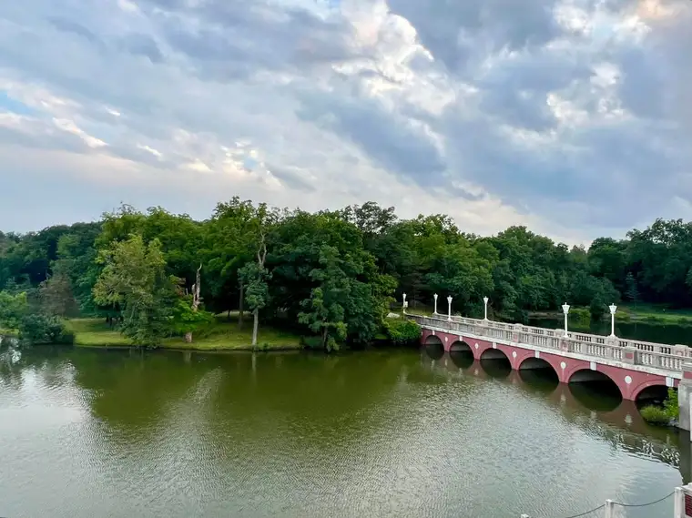
As night settled in further, we made our way to the Marian grotto, taking time to pray for our families and strolling past lit-up stations of the cross structures while swatting at mosquitoes. When we could take in no more, we retreated to our “cell” for a good night’s rest.
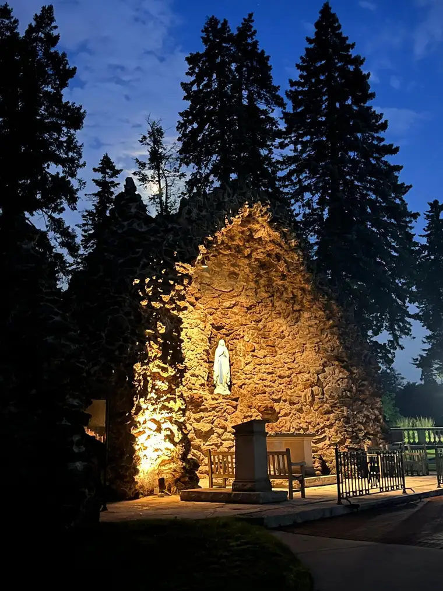
Tomorrow, the St. Maximillian Kolbe Shrine calls. So, more on that soon!
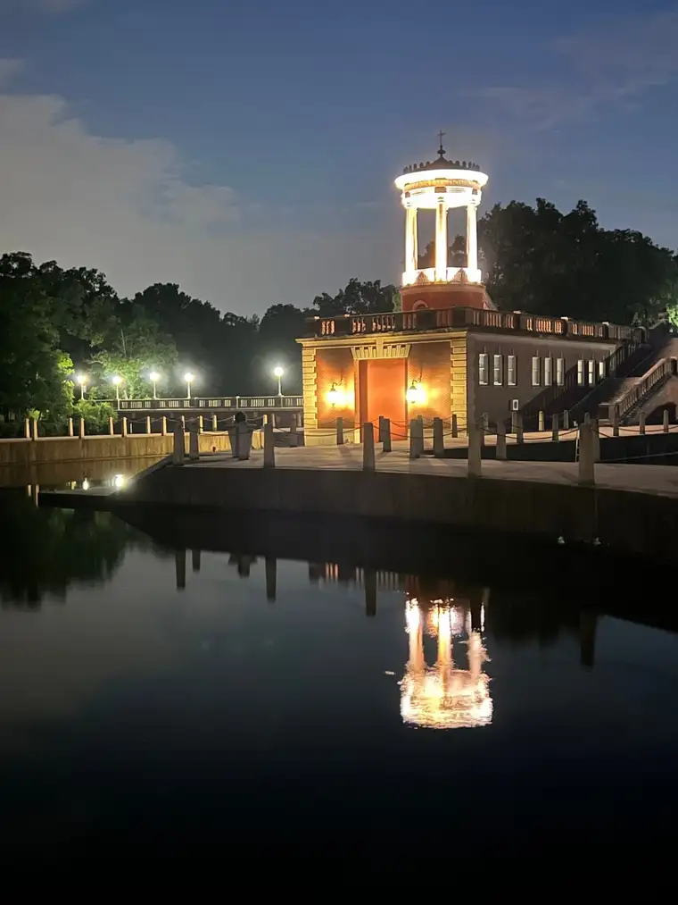